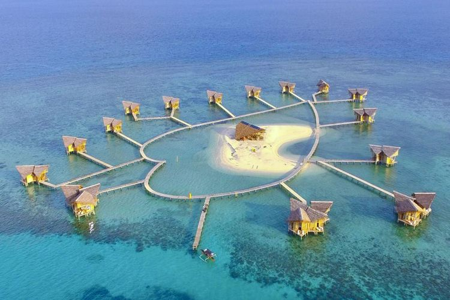
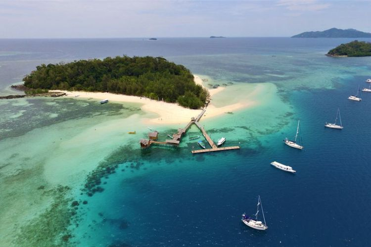
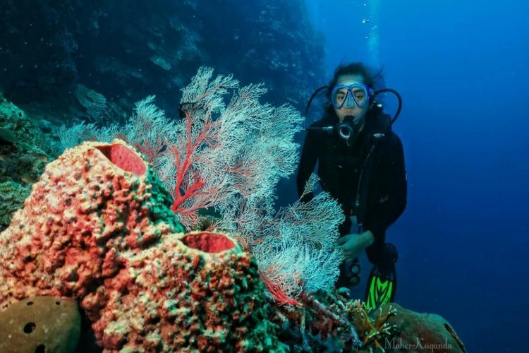

Pulau Cinta

Pulo Cinta merupakan pulau dengan pasir berbentuk hati atau love,
yang terletak di perairan Kabupaten Boalemo, tepatnya di
Patoameme, Batumoito, Kabupaten Boalemo, Gorontalo. Pulau alami
ini digadang sebagai pulau romantis dengan jembatan yang dibentuk
seperti hati lengkap dengan eco resort sebanyak 15 resort.
Pengujung dapat melakukan snorkeling dan diving atau sekadar
menikmati pemandangan indah di pulau ini. Meski malam hari,
pengunjung dapat menikmati pemandangan langit bertabur bintang
yang berkelip cantik. Harga untuk memasuki Pulo Cinta, tergantung
pada pilihan paket yang disewa oleh pengunjung.
Pulau Saronde

Pulau Saronde memiliki luas sekitar 1 kilometer persegi,
menyuguhkan pemandangan cantik nan eksotis. Pulau yang jugamenjadi
destinasi favorite ini terletak di utara Teluk Kwandang, Kecamtan
Kwandang, Kabupaten Gorontalo Utara. Pulau ini memiliki pasir
putih berpadu dengan air laut yang biru dan jernih hingga
penampakkan terumbu karang dapat terlihat dari atas permukaan air.
Pulau inisangat cocok untuk melakukan snorkeling, diving, surfing,
memancing, berenang, atau sekadar bersantai. Memasuki pulau ini
tidakperlu membayar tiket masuk, namun ntuk mencapai pulau ini
pengunjung perlu menyewa perahu dengan harga sekitar 400 ribu
rupiah. Bila pengunjung ingin bermalam di pulau ini, pengunjung
dapat bermalam di cottage yang tersedia dengan harga mulai dari Rp
500.000.
Pulau Saronde

Taman Laut Olele salah satu ikon wisata di Gorontalo dengan
pemandangan bawah laut yang cantiik dengan terumbu karang
warna-warni. Wisata bahari ini terletak di Desa Olele, Kecamatan
Kabila Bone, Gorontalo, Provinsi Gorontalo. Taman laut ini sangat
cocok untuk snorkeling dan diving yang sangat cocok untuk pemula
karena terdapat dua tipe kedalaman yaitu dangkal dan dalam.
Pemandangan bawah laut yang indah ini memiliki beberapa spot
seperti Goa Jin, coral pole, beehive, hinga traffic jam. Pecinta
fotografi juga bisa mengabadikan momen yang keren di Goa Jin.’
Untuk melakukan snorkeling, pengunjung akan dikenai biaya sewa
alat dan kapal dengan harga berkisar 200 hingga 500 ribu rupiah.
Jika ingin melakukan diving, pengunjung akan dikenai biaya sewa
alat dan kapal dengan harga berkisar Rp 300.000 - Rp 700.000.